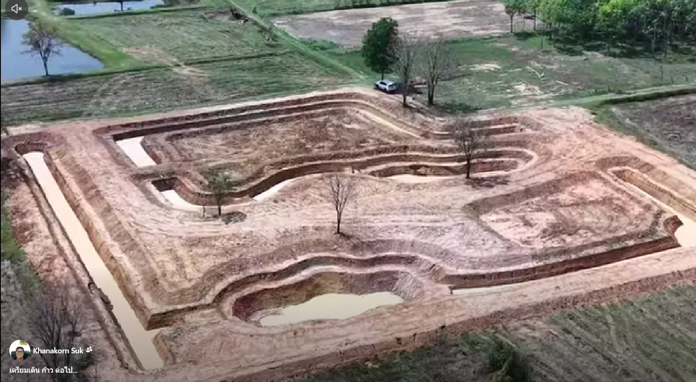
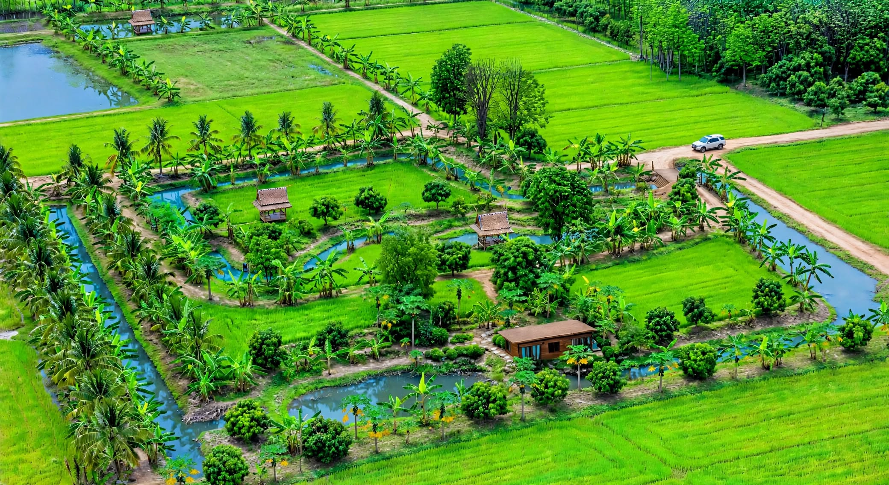

โคกหนองนา 4ไร่ 1งาน • บ้านโกรกขี้หนู • บุรีรัมย์
พื้นที่แห่งความพอเพียง 4 ไร่ 1 งาน ที่บ้านโกรกขี้หนู จ.บุรีรัมย์ พัฒนาตามแนวคิดโคก หนอง นา โมเดล เพื่อเป็นแหล่งอาหาร แหล่งเรียนรู้ และที่พักใจ
ปลูกไม้ป่า ไม้ผล ไม้ใช้สอย ผสมผสาน สร้างความร่มรื่นและความมั่นคงทางอาหาร
ขุดหนองเก็บน้ำ เลี้ยงปลา กระจายความชุ่มชื้นทั่วพื้นที่ ใช้ได้ตลอดปี
ทำนาอินทรีย์ ปลูกข้าวปลอดภัย ไม่ใช้สารเคมี เพื่อสุขภาพที่ดี
จากภาพก่อนทำที่เพิ่งขุดคลองใหม่ๆ เป็นดินโล่ง สู่ปัจจุบันที่เขียวชอุ่มเต็มพื้นที่ 4ไร่1งาน - ทางเข้าชิดเขตขวามีสะพานข้ามคลอง คลองล้อมรอบ ศาลา2หลัง บ้านไม้ ถนนกลางสวนคดเคี้ยว ตรงกับภาพถ่ายจริง


ยินดีต้อนรับทุกท่านที่บ้านโกรกขี้หนู บุรีรัมย์
อัปเดตล่าสุดผ่าน GitHub • khanakorn-buriram.netlify.app